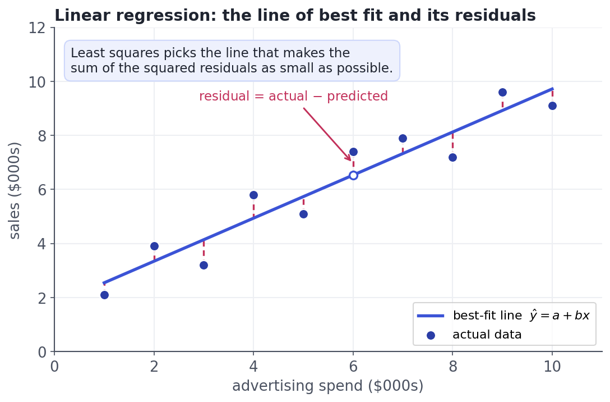

Linear Regression From Scratch
The workhorse, fully understood: fit, residuals, assumptions.
Linear regression is the workhorse you will fit a hundred times, and the foundation nearly every other model builds on. It answers the most common question in analytics — "if this goes up by one, what happens to that?" — with a single, honest line. It is also the most interpretable model there is: no black box, just a slope you can explain to your boss. Master it and you understand the skeleton of machine learning; every fancier model is a variation on the idea you meet here.
ConceptThe line of best fit
Linear regression models a numeric target y as a straight-line function of a feature x:
> ŷ = a + b·x
b is the slope — how much the prediction changes for each one-unit increase in x (the effect you care about). a is the intercept — the prediction when x is zero. The little hat on ŷ means "predicted", to distinguish the model's guess from the actual value y. With more than one feature it becomes ŷ = a + b₁x₁ + b₂x₂ + …, a weighted sum — but the intuition is the same.

Concept · the heart of itWhat "best" means: least squares
There are infinitely many lines you could draw; which one is best? For each data point, the residual is actual - predicted = y - ŷ. A good line makes the residuals small overall. The standard recipe, ordinary least squares, chooses a and b to minimise the sum of the squared residuals (Σ(y - ŷ)²). Why squared? Two reasons: squaring makes every miss positive (so gaps above and below don't cancel out), and it punishes big misses far more than small ones, so the line refuses to sit far from any point. Drag the points below and watch the line re-solve to keep that squared error as small as it can:
Worked exampleFit one in scikit-learn
You will almost never compute a and b by hand — scikit-learn (Python's ML library) does it in three lines. Here we fit sales against advertising spend, read off the slope and intercept, check the fit, and make a prediction:
import numpy as np
from sklearn.linear_model import LinearRegression
# advertising spend ($000s) -> sales ($000s)
X = np.array([1,2,3,4,5,6,7,8,9,10]).reshape(-1, 1) # features must be 2-D: one column
y = np.array([2.1,3.9,3.2,5.8,5.1,7.4,7.9,7.2,9.6,9.1])
model = LinearRegression().fit(X, y)
print(f"slope b = {model.coef_[0]:.3f} (sales rise ~{model.coef_[0]:.2f}k per $1k of ad spend)")
print(f"intercept a = {model.intercept_:.3f}")
print(f"R^2 = {model.score(X, y):.3f} (share of variation the line explains)")
pred = model.predict([[6.5]])[0]
print(f"predict spend = 6.5 -> sales = {pred:.2f}k")slope b = 0.797 (sales rise ~0.80k per $1k of ad spend) intercept a = 1.747 R^2 = 0.908 (share of variation the line explains) predict spend = 6.5 -> sales = 6.93k
Read it like a sentence: each extra $1,000 of advertising is associated with about $800 more sales (the slope), the model explains ~91% of the variation in sales (R² close to 1 is a tight fit), and it predicts a spend of 6.5 lands near $6,900 in sales. Three lines of code, and you can defend every number.
Interactive labYour turn — fit and predict
X (advertising spend, a 2-D array) and y (sales) are loaded, and LinearRegression is imported. Fit a model to X and y, then assign to answer the predicted sales when spend = 12, rounded to 2 decimals.
X → spend (2-D), y → sales; LinearRegression imported. First Run loads scikit-learn (~15s).LinearRegression().fit(X, y), then call model.predict([[12]]) and take element [0], wrapped in round(float(...), 2).model = LinearRegression().fit(X, y)
answer = round(float(model.predict([[12]])[0]), 2).fit finds the least-squares line; .predict([[12]]) extrapolates it to a spend of 12 (≈ 11.31k sales).
★ Key points to remember
- Linear regression predicts a number as
ŷ = a + b·x:b(slope) is the effect per unit ofx;a(intercept) is the value atx = 0. - A residual is
actual - predicted. Ordinary least squares picks the line that minimises the sum of squared residuals. - Squaring the residuals makes misses positive and punishes large errors most — which is why a single outlier can tilt the whole line.
- In code it is three lines:
LinearRegression().fit(X, y), then readmodel.coef_/model.intercept_and callmodel.predict(...). - R² is the share of the target's variation the line explains (0 = useless, 1 = perfect) — a quick read on fit quality.
◆ Practice▸
intercept = 20000, slope = 8000. In plain English, what does the model predict for a team of 5, and what does the intercept mean?Show solution & reasoning
Prediction = 20000 + 8000*5 = $60,000. The slope says each additional salesperson is associated with about $8,000 more monthly revenue. The intercept ($20,000) is the model's prediction with zero salespeople — a baseline that may or may not be meaningful (extrapolating to x = 0 can be nonsense if you never observed a team that small; treat it as a math anchor, not gospel).
Show solution & reasoning
Because least squares squares residuals, a single far-off point (a high-leverage outlier) can pull the line toward itself and inflate or distort the slope — and it can even prop up R². Check by plotting the data and the residuals, refitting without the point to see how much the slope moves, and deciding whether the point is a data error or a real (but rare) case that deserves separate treatment.
◎ Deep dive: R² exactly, the four OLS assumptions, and regularization▸
R², precisely. R² = 1 - SS_res / SS_tot, where SS_res is the sum of squared residuals from your line and SS_tot is the sum of squared deviations from just the mean of y. So R² asks: how much better is my line than simply predicting the average every time? 1.0 means the line nails every point; 0 means it's no better than the mean; it can even go negative on new data if the model is worse than the mean. Crucially, a high R² on the training data says nothing about new data — that's why we hold out a test set (Lesson 8.1).
The assumptions behind the honest version. Ordinary least squares gives a fit no matter what, but its inferences (confidence intervals, p-values on the coefficients) rely on four assumptions: a genuinely linear relationship, independent observations, constant variance of the residuals (homoscedasticity), and roughly normal residuals. The single best way to check them is a residual plot: residuals scattered structurelessly around zero is healthy; a curve, a funnel, or clusters means an assumption is violated and your slope's error bars can't be trusted. Regression is a bridge from Track 4's statistics to modelling — the fit is easy, the honesty is the craft.
Where it goes next: regularization. With many features, plain least squares can overfit — chasing noise by inflating coefficients. Ridge regression adds a penalty on the squared size of the coefficients, and Lasso penalises their absolute size (which drives some coefficients to exactly zero, doing feature selection for you). Both trade a little bias for a lot less variance — the bias–variance tradeoff from Lesson 8.1, made concrete. You'll meet them again in feature engineering (Track 9).
Expect: "explain linear regression to a non-technical stakeholder" — a line whose slope is the effect of one thing on another, chosen to sit as close to the data as possible. Then "what does least squares minimise?" (sum of squared residuals) and "what's R²?" (fraction of variation explained). Bonus depth: name an assumption (constant-variance residuals) and why you'd plot residuals to check it.